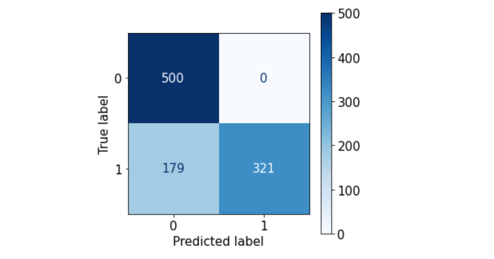
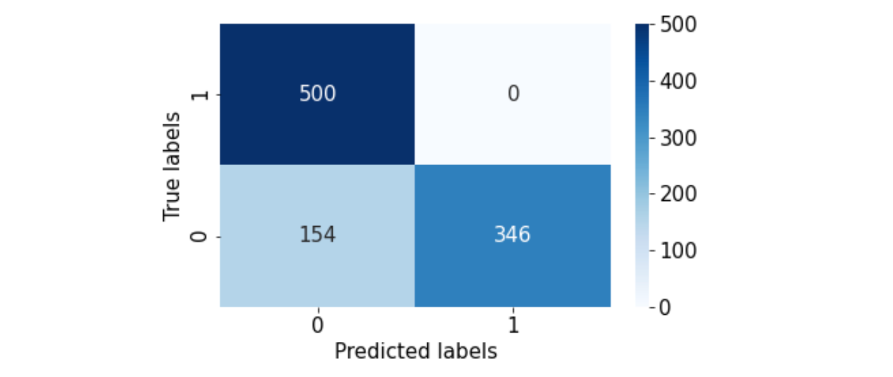
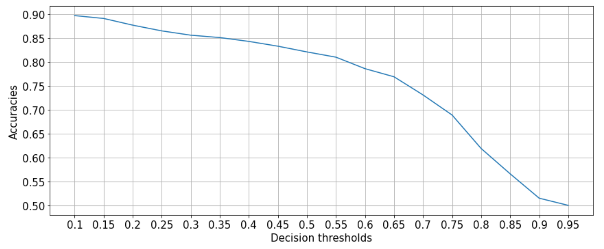
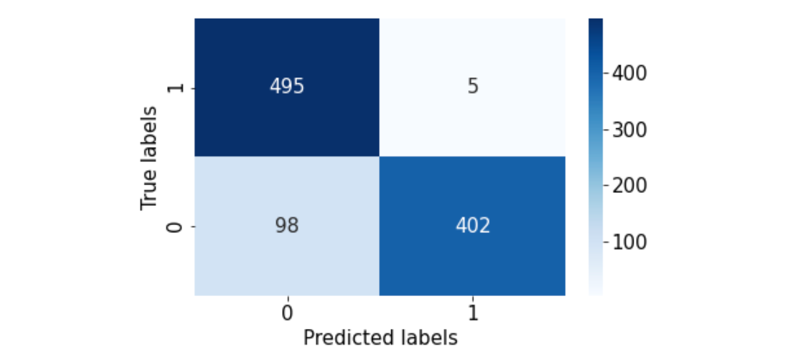
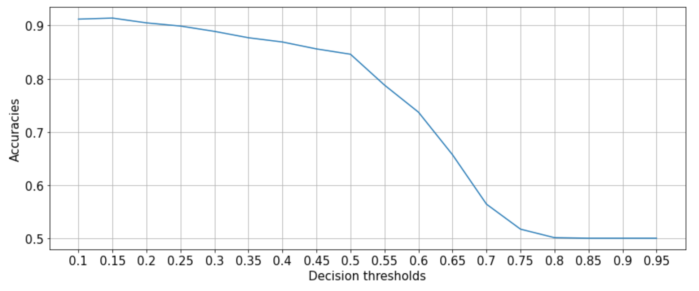
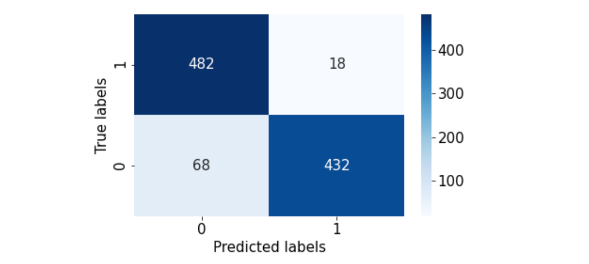
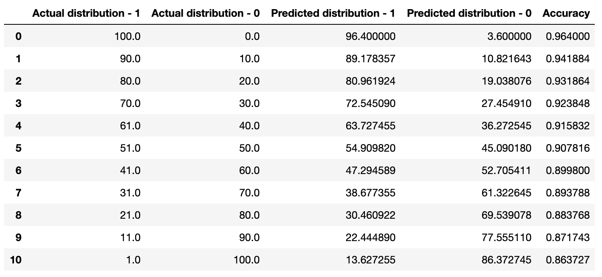

Not so simple classification.
Resources on the internet consider binary classification as a relatively straightforward problem.
I have had the opportunity to work on a Proof-Of-Concept (POC) project, where we had to predict if a user will visit the campaign website given a set of features about the user.
My previous understanding about binary classification has changed dramatically after the experiments. Hopefully, your perspective about binary classification will change too.
Conducting variety of experimentations using our data set, we have found several practical techniques that might be extremely useful for the reader.
Specifically, we have found the answer to 3 critical questions:
- How to train a model when only 1% of the samples are positive samples?
- How to choose the decision threshold of a classification model?
- How to evaluate a model, so that the client can easily understand the capabilities of the model?
1. How to train a model when only 1% of the samples are positive samples?
Before diving deep, let’s train a classifier and calculate our baseline scores!
First, let’s create a simple data set:
import pandas as pd
from sklearn.datasets import make_classification
X, y = make_classification(n_samples=100000,
n_features=30,
n_redundant=0,
n_clusters_per_class=2,
weights=[0.98],
flip_y=0,
random_state=12345)By setting weights to 0.98, we are creating an imbalanced data set
For ease of use, let’s convert the arrays into a DataFrame:
cols = ["feature_"+str(i) for i in range(1, X.shape[1]+1)]
df = pd.DataFrame.from_records(X, columns=cols)
df["Class"] = yLet’s split the data into train/test sets to evaluate our models on a common test set:
pos_samples = df[df["Class"]==1].sample(frac=1) #extracting positive samples
neg_samples = df[df["Class"]==0].sample(frac=1) #extracting negative samples
# let's set aside 500 positive and 500 negative samples
test = pd.concat((pos_samples[:500], neg_samples[:500]), axis=0).sample(frac=1).reset_index(drop=True) #combine, shuffle, reset indices
# let's use the rest for training
train = pd.concat((pos_samples[500:], neg_samples[500:]), axis=0).sample(frac=1).reset_index(drop=True) #combine, shuffle, reset indicesNow let’s train a model using the training set and evaluate on the test set (for simplicity, I am going to use sklearn’s “RandomForestClassifier”):
from sklearn.ensemble import RandomForestClassifier
model = RandomForestClassifier(n_estimators=1000, #the more the better, but slower
random_state=12345, #lucky number
class_weight="balanced",
verbose=2,
n_jobs=-1).fit(train.values[:,:-1], train["Class"])Make sure, the “class_weight” parameter is set to “balanced”, since we are dealing with an imbalanced classification problem!
Since we are working with an imbalanced data, let’s use sklearn’s “balanced_accuracy_score”, “classification_report” and “plot_confusion_matrix” functionalities to evaluate our model:
from sklearn.metrics import classification_report, balanced_accuracy_score, plot_confusion_matrix
preds = model.predict(test.values[:,:-1])
print(classification_report(test["Class"], preds))
print("Accuracy: {}%".format(int(balanced_accuracy_score(test["Class"], preds)*100)))output:
precision recall f1-score support
0 0.74 1.00 0.85 500
1 1.00 0.64 0.78 500
accuracy 0.82 1000
macro avg 0.87 0.82 0.82 1000
weighted avg 0.87 0.82 0.82 1000
Accuracy: 82%We can predict our target with 82% accuracy, not bad!
Let’s take a look at the confusion matrix:
import matplotlib.pyplot as plt
plt.rcParams.update({'font.size': 15})
fig, ax = plt.subplots(figsize=(5, 5))
_=plot_confusion_matrix(model, test.values[:,:-1], test["Class"], values_format = '.0f', cmap=plt.cm.Blues, ax=ax)output:

The baseline model seems to incorrectly predict positive samples as negative samples…Let’s try to improve our results!
Bagging
What is Bagging?
Bagging is a sampling method, commonly used in ensemble learning. It means splitting the training data into several subsets and training a model on each subset. After training the models, each model generates a prediction for a sample and all predictions are averaged to produce the prediction.
How to choose the number of splits?
There is no set value for the number of splits. However, based on how many positive samples there are, I usually choose 5-10 subsets. (Split as long as there is improvement)
pos_samples = train[train["Class"]==1].sample(frac=1)
neg_samples = train[train["Class"]==0].sample(frac=1)
#lets split into 5 bags
train_1 = pd.concat((pos_samples[:300], neg_samples[:3000]), axis=0)
train_2 = pd.concat((pos_samples[300:600], neg_samples[3000:6000]), axis=0)
train_3 = pd.concat((pos_samples[600:900], neg_samples[6000:9000]), axis=0)
train_4 = pd.concat((pos_samples[900:1200], neg_samples[9000:12000]), axis=0)
train_5 = pd.concat((pos_samples[1200:], neg_samples[12000:15000]), axis=0)Train 5 models for 5 splits:
bag_1 = RandomForestClassifier(n_estimators=1000, random_state=12345, class_weight="balanced", n_jobs=-1).fit(train_1.values[:,:-1], train_1["Class"])
bag_2 = RandomForestClassifier(n_estimators=1000, random_state=12345, class_weight="balanced", n_jobs=-1).fit(train_2.values[:,:-1], train_2["Class"])
bag_3 = RandomForestClassifier(n_estimators=1000, random_state=12345, class_weight="balanced", n_jobs=-1).fit(train_3.values[:,:-1], train_3["Class"])
bag_4 = RandomForestClassifier(n_estimators=1000, random_state=12345, class_weight="balanced", n_jobs=-1).fit(train_4.values[:,:-1], train_4["Class"])
bag_5 = RandomForestClassifier(n_estimators=1000, random_state=12345, class_weight="balanced", n_jobs=-1).fit(train_5.values[:,:-1], train_5["Class"])How to combine the predictions of the models?
We can use the “predict_proba” function of our “RandomForestClassifier” model to get the probabilities of each sample belonging to a specific class!
probs_1 = bag_1.predict_proba(test.values[:,:-1])[:,1]
probs_2 = bag_2.predict_proba(test.values[:,:-1])[:,1]
probs_3 = bag_3.predict_proba(test.values[:,:-1])[:,1]
probs_4 = bag_4.predict_proba(test.values[:,:-1])[:,1]
probs_5 = bag_5.predict_proba(test.values[:,:-1])[:,1]Let’s evaluate our models:
probs = (probs_1+probs_2+probs_3+probs_4+probs_5)/5
preds = [1 if prob >= 0.5 else 0 for prob in probs]
print(classification_report(test["Class"], preds))
print("Accuracy: {}%".format(int(balanced_accuracy_score(test["Class"], preds)*100)))output:
precision recall f1-score support
0 0.76 1.00 0.87 500
1 1.00 0.69 0.82 500
accuracy 0.85 1000
macro avg 0.88 0.85 0.84 1000
weighted avg 0.88 0.85 0.84 1000
Accuracy: 84%2% increase in accuracy…
Let’s take a look at the confusion matrix:
from sklearn.metrics import confusion_matrix
import seaborn as sns
cm = confusion_matrix(test["Class"], preds)
ax= plt.subplot()
sns.heatmap(cm, annot=True, ax = ax, fmt='g', cmap=plt.cm.Blues)
# labels, title and ticks
ax.set_xlabel('Predicted labels');ax.set_ylabel('True labels')
ax.xaxis.set_ticklabels(['0', '1']); ax.yaxis.set_ticklabels(['1', '0'])
_=plt.tight_layout()output:

Some of the predictions have improved…But false negatives are still high!
Now, you might be wondering if Bagging is worth it or not.
Here comes the interesting part…
2. How to choose the decision threshold of a model?
The advantage of the Bagging method is observed when we choose optimal decision thresholds for our classifiers.
But what is a decision threshold?
For example, in a binary classification problem with class labels 0 and 1, with predicted probabilities and a decision threshold of 0.5, the predicted probabilities less than the threshold of 0.5 are assigned to class 0 and values greater than or equal to 0.5 are assigned to class 1.
- Prediction < 0.5 = Class 0
- Prediction >= 0.5 = Class 1
Why do we need to optimize the decision thresholds?
https://stats.stackexchange.com/questions/312119/reduce-classification-probability-threshold
Okay let’s start!
Baseline model with optimized decision thresholds:
One of the easy ways to optimize decision thresholds, is to simply iterate over all possible decision thresholds:
dts = [i/100 for i in range(10, 100, 5)]
accs = []
for dt in dts:
probs = model.predict_proba(test.values[:,:-1])[:,1]
preds = [1 if prob >= dt else 0 for prob in probs]
acc = balanced_accuracy_score(test["Class"], preds)
accs.append(acc)Let’s plot the accuracies for each decision threshold:
fig=plt.figure(figsize=(12, 5))
_=plt.plot(accs)
_=plt.xticks([i for i in range(len(dts))], dts)
_=plt.grid()
_=plt.tight_layout()
_=plt.xlabel("Decision thresholds")
_=plt.ylabel("Accuracies")output:

We can see that decision threshold of 0.1 (very small) yields the best accuracy!
Let’s evaluate:
probs = model.predict_proba(test.values[:,:-1])[:,1]
preds = [1 if prob >= 0.1 else 0 for prob in probs]
print(classification_report(test["Class"], preds))
print("Accuracy: {}%".format(int(balanced_accuracy_score(test["Class"], preds)*100)))output:
precision recall f1-score support
0 0.83 0.99 0.91 500
1 0.99 0.80 0.89 500
accuracy 0.90 1000
macro avg 0.91 0.90 0.90 1000
weighted avg 0.91 0.90 0.90 1000
Accuracy: 89%Baseline model’s accuracy has improved from 82% to 89%! Great!
How about the confusion matrix?
cm = confusion_matrix(test["Class"], preds)
ax= plt.subplot()
sns.heatmap(cm, annot=True, ax = ax, fmt='g', cmap=plt.cm.Blues)
ax.set_xlabel('Predicted labels')
ax.set_ylabel('True labels')
ax.xaxis.set_ticklabels(['0', '1']); ax.yaxis.set_ticklabels(['1', '0'])
_=plt.tight_layout()output:

Looks like we are getting somewhere. False negative have decreased!
Let’s try the same optimization for the Bagging method!
Bagged models with optimized decision thresholds:
dts = [i/100 for i in range(10, 100, 5)]
accs = []
for dt in dts:
probs_1 = bag_1.predict_proba(test.values[:,:-1])[:,1]
probs_2 = bag_2.predict_proba(test.values[:,:-1])[:,1]
probs_3 = bag_3.predict_proba(test.values[:,:-1])[:,1]
probs_4 = bag_4.predict_proba(test.values[:,:-1])[:,1]
probs_5 = bag_5.predict_proba(test.values[:,:-1])[:,1]
probs = (probs_1+probs_2+probs_3+probs_4+probs_5)/5
preds = [1 if prob >= dt else 0 for prob in probs]
acc = balanced_accuracy_score(test["Class"], preds)
accs.append(acc)Let’s plot the results:
fig=plt.figure(figsize=(12, 5))
_=plt.plot(accs)
_=plt.xticks([i for i in range(len(dts))], dts)
_=plt.grid()
_=plt.tight_layout()
_=plt.xlabel("Decision thresholds")
_=plt.ylabel("Accuracies")output:

Similar to the baseline model, 0.1 seems to be the optimal decision threshold for maximizing accuracy!
Let’s evaluate:
probs_1 = bag_1.predict_proba(test.values[:,:-1])[:,1]
probs_2 = bag_2.predict_proba(test.values[:,:-1])[:,1]
probs_3 = bag_3.predict_proba(test.values[:,:-1])[:,1]
probs_4 = bag_4.predict_proba(test.values[:,:-1])[:,1]
probs_5 = bag_5.predict_proba(test.values[:,:-1])[:,1]
probs = (probs_1+probs_2+probs_3+probs_4+probs_5)/5
preds = [1 if prob >= 0.1 else 0 for prob in probs]
print(classification_report(test["Class"], preds))
print("Accuracy: {}%".format(int(balanced_accuracy_score(test["Class"], preds)*100)))output:
precision recall f1-score support
0 0.88 0.96 0.92 500
1 0.96 0.86 0.91 500
accuracy 0.91 1000
macro avg 0.92 0.91 0.91 1000
weighted avg 0.92 0.91 0.91 1000
Accuracy: 91%We have reached 91% accuracy using Bagging!
How about the confusion matrix?
cm = confusion_matrix(test["Class"], preds)
ax= plt.subplot()
sns.heatmap(cm, annot=True, ax = ax, fmt='g', cmap=plt.cm.Blues)
ax.set_xlabel('Predicted labels')
ax.set_ylabel('True labels')
ax.xaxis.set_ticklabels(['0', '1']); ax.yaxis.set_ticklabels(['1', '0'])
_=plt.tight_layout()output:

We have managed to improve our model’s false negative predictions quite significantly!
Before, it was difficult to judge the benefits of the Bagging method.
However, once we have performed a simple decision threshold optimization routine, we are able to see the advantage of using the Bagging sampling method!
There is still room for improvement, please try to improve the accuracy ?.
***If you are interested in optimizing the decision threshold of a multi-class classifier, please let me know! I have a working solution.
3. How to evaluate a model, so that the client can easily understand the capabilities of the model?
Last, but not least, let’s talk about the interpretability of our results.
It is common for our clients to not have prior knowledge of ML evaluation methods. However, they would like to know if our models are robust or not.
How do we solve this problem?
For binary classification problems, here is a solution:
In the production environment, our classifier is most likely to see different types of data with different distributions per class. Therefore, we can evaluate the capability of our models by simulating different input distributions!
Example:
from sklearn.metrics import accuracy_score
from collections import Counter
import numpy as np
init=1
rows = []
for i in range(11):
neg = test[test["Class"]==0].reset_index(drop=True)
pos = test[test["Class"]==1].reset_index(drop=True)
neg_sample = neg[:int(neg.shape[0]*init)]
pos_sample = pos[:int((((neg.shape[0]*init)*1)/init)*(1-init))]
combined = pd.concat((neg_sample, pos_sample), axis=0)
probs_1 = bag_1.predict_proba(combined.values[:,:-1])[:,1]
probs_2 = bag_2.predict_proba(combined.values[:,:-1])[:,1]
probs_3 = bag_3.predict_proba(combined.values[:,:-1])[:,1]
probs_4 = bag_4.predict_proba(combined.values[:,:-1])[:,1]
probs_5 = bag_5.predict_proba(combined.values[:,:-1])[:,1]
probs = (probs_1+probs_2+probs_3+probs_4+probs_5)/5
preds = [1 if prob >= 0.1 else 0 for prob in probs]
acc = accuracy_score(preds, combined["Class"])
neg_preds = (Counter(preds)[0]/len(preds))*100
pos_preds = (Counter(preds)[1]/len(preds))*100
rows.append([np.ceil(init*100), np.ceil((1-init)*100), neg_preds, pos_preds, acc])
init = init - 0.1
df = pd.DataFrame.from_records(rows, columns=["Actual - distribution", "Actual + distribution", "Predicted - distribution", "Actual + distribution", "Accuracy"])Let’s take a look at the results:
output:

If we take a look at the first 2 columns in the table, we can see that the model is being evaluated on different input distributions (values are in percentages %).
Moreover, our model is able to accurately predict the positive and negative distributions (3rd and 4th columns, values are in percentages %)!
If we take a look at the “Accuracy” column and analyze from top to bottom, we can see that our model has a bias toward predicting negative samples. However, the overall accuracy seems to be quite high!
Isn’t the above table too complex?
We can perform cross-validation on the test data and calculate the accuracy with 95% confidence interval!
X_test = test[cols]
y_test = test["Class"]
from sklearn.model_selection import KFold
cv = KFold(n_splits=10, random_state=12345, shuffle=True)
accs = []
for train_index, test_index in cv.split(X_test, y_test):
xtest, ytest = X_test.iloc[test_index], y_test.iloc[test_index]
probs_1 = bag_1.predict_proba(xtest)[:,1]
probs_2 = bag_2.predict_proba(xtest)[:,1]
probs_3 = bag_3.predict_proba(xtest)[:,1]
probs_4 = bag_4.predict_proba(xtest)[:,1]
probs_5 = bag_5.predict_proba(xtest)[:,1]
probs = (probs_1+probs_2+probs_3+probs_4+probs_5)/5
preds = [1 if prob >= 0.15 else 0 for prob in probs]
acc = balanced_accuracy_score(ytest, preds)
accs.append(acc)
accs_ = np.array(accs)
print("Accuracy: %0.2f (+/- %0.2f)" % (accs_.mean(), accs_.std() * 2)) Accuracy: 0.91 (+/- 0.05)Using this single value for accuracy, the client can easily understand the overall capability of our model!
Conclusion:
- In this post, I have tried to introduce an ensemble sampling method called “Bagging”
- In the beginning, it was difficult to assess the advantage of using the Bagging method. However, once we have optimized our decision thresholds, we were able to see the benefits
- It is common for our clients to require interpretable evaluation metrics. Therefore, I have shared a simple evaluation method for explaining classification models